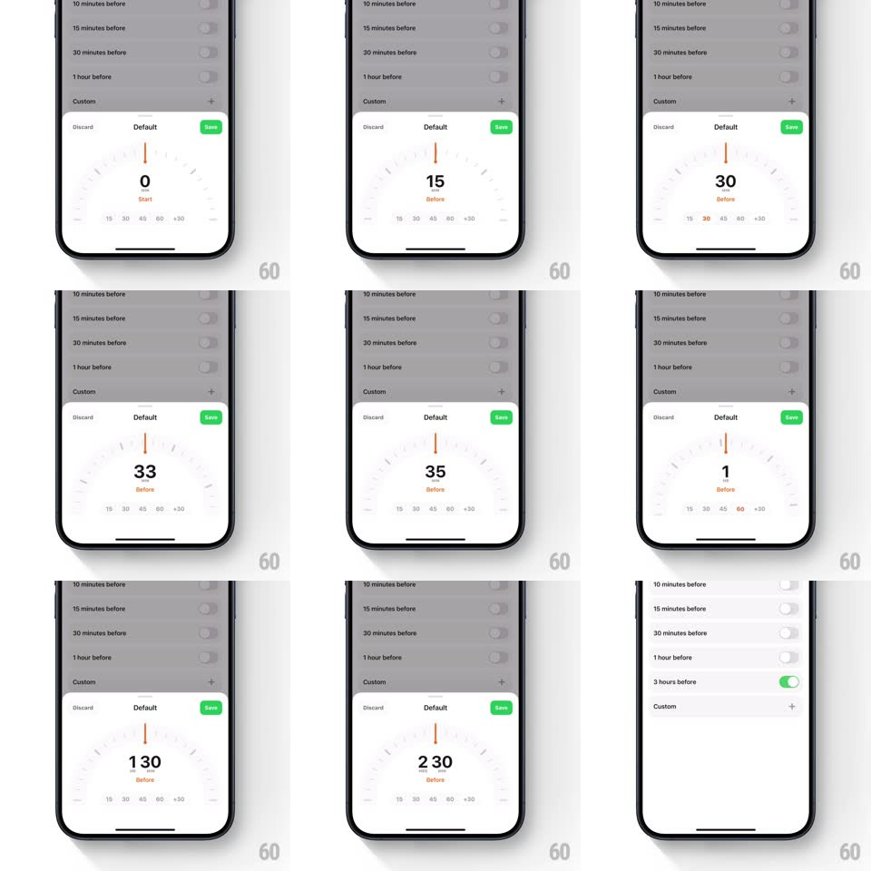

Media
Frame-by-frame

Rebuild this interaction 1:1: Amie's custom reminder-time sheet - a semicircular dial with an orange needle that you rotate to set minutes before, with quick presets beneath.

Rebuild this interaction 1:1: Amie's custom reminder-time sheet - a semicircular dial with an orange needle that you rotate to set minutes before, with quick presets beneath. ## Integration Integration: stack-agnostic spec - springs given as stiffness/damping, timed motions as duration + curve; map every value to your framework and animation library of choice. ## Scene A reminder-options list dims behind a rising bottom sheet: Discard / Default / Save header, a semicircular gauge with tick marks and an orange needle at 12 o'clock, a large center numeral with a "Start"/"Before" caption, and a preset row (15, 30, 45, 60, +30). ## Motion spec Pattern: rotary dial with preset shortcuts. - Sheet enters sliding up (spring ~340/28) as the list dims to 40% (250ms). - Drag around the dial: the needle tracks the finger's angle 1:1; the center numeral rolls to the current value (vertical digit roll, 120ms) and the caption swaps Start/Before at the 0 boundary (100ms crossfade). - The needle is elastic: push past either end and it stretches a few degrees then resists (rubber-band, 0.25x). - Tap a preset: the needle sweeps to that value (spring ~400/24, shortest arc), the numeral catches up with a fast roll, and the preset pill highlights orange (background fill 150ms). - Values over 60 minutes reformat to h:mm (2 30) with the unit gap animated (digits slide apart 150ms). - Save: the sheet slides down, the dim lifts, and the list's new "Custom" row flashes its toggle on (green, 200ms). ## Calibration - One full semicircle spans the value range; needle angle and numeral never disagree. - Ticks are quiet gray; only the needle and selected preset carry orange. ## Reduced motion Needle jumps to value; numeral crossfades. ## Don't miss - The needle pivots from the dial center below the numeral, not from its own base. - +30 is an increment button, not a preset - tapping it adds 30 with a needle hop.